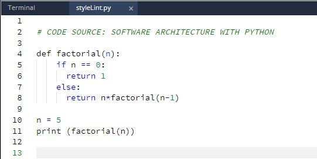
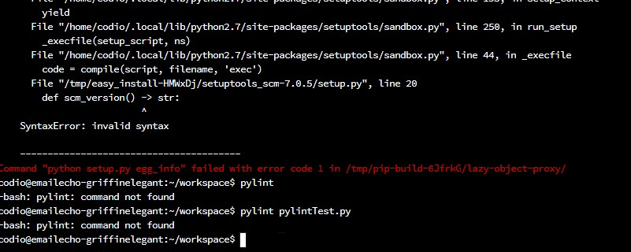
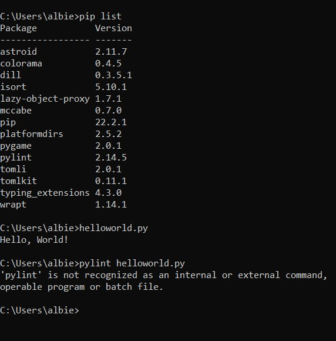

Secure Software Development

Testing with Python
Question 1
Run styleLint.py in Codio.
What happens when the code is run? Can you modify this code for a more favourable outcome? What amendments have you made to the code? between security and convenience and if a the loss of security is worth the convenience it brings.
Running the code returns "IndentationError: expected an indented block"
Code amendments - factoral of 5
Question 2
pip install pylint, Run pylint on pylintTest.py
Review each of the code errors returned. Can you correct each of the errors identified by pylint?
Before correcting the code errors, save the pylintTest.py file with a new name (it will be needed again in the next question).
As I have encountered many times before, I hit a brick wall trying to use Codio - and very little help is available. So I will try install pylint in command prompt.
After another couple of hours of research and effort I also cannot run pylint in command prompt - I have installed pylint and it's listed however I get an error message when I try to run pylint on my code.
Project abandoned - Reflection
I have decided to give up on the testing with pylint project. I was able to use the linter during the buffer coding task but have struggled with this task. Some time coding on Codio doesn't run as planned, but have always been able to switch over to Pycharm or Visual Code Studio and continue there. On this occasion I had diffiulty using pylint on pycharm so I tried Command Prompt and failed again, very frustrating. In the process I watched multiple videos on YouTube and read articles enough to get to know about the application of pylint. I wanted to try it out myself to see how it differed from coding with Pycharm which uses the TSLint package as default and how useful it was to use a pylint or flake8 when the built in fuctions in IDE such as Pycharm and Visual Code Studio were already available.